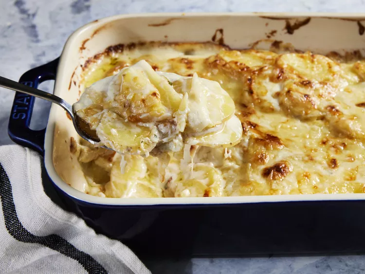

Gratin Dauphinois

delicious gratin dauphinois
Ingredients
- Butter
- Garlic
- Flour
- Heavy cream
- Whole milk
- Salt
- Yukon gold potatoes
- Spices
- Gruyere cheese
Here's a very brief overview of what you can expect when you make homemade gratin dauphinois:
- Preheat oven to 375 degrees F (190 degrees C). Grease a 2-quart baking dish.
- Melt butter in a medium saucepan over medium-low heat. Add garlic; cook, stirring occasionally, until fragrant, 1 minute. Stir in flour; cook, stirring constantly, for 1 minute. Whisk in heavy cream, milk, and salt until smooth.
- Add sliced potatoes and bring to a simmer; cook, gently stirring occasionally, until potatoes begin to soften, 12 to 15 minutes. Remove from heat; stir in thyme and pepper.
- Layer 1/2 of the potatoes in the prepared baking dish; sprinkle 1/2 cup cheese evenly over potatoes. Top with remaining potatoes and spoon remaining liquid left in the pot over the potatoes.
- Top with remaining 1/2 cup cheese.
- Bake in preheated oven until sauce is thickened, top is browned in spots, and potatoes are tender, 40 to 45 minutes. Let stand 15 minutes before serving; garnish with additional thyme.